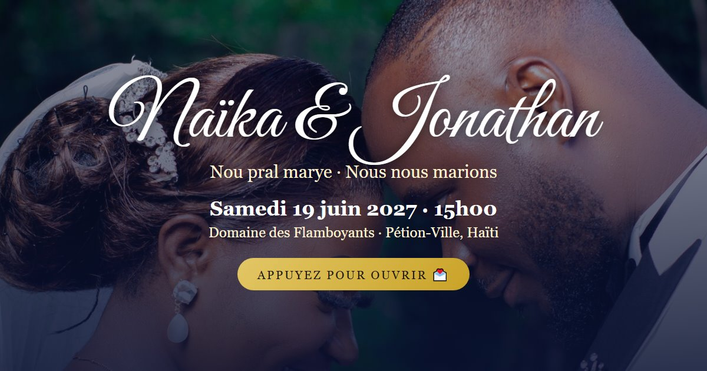
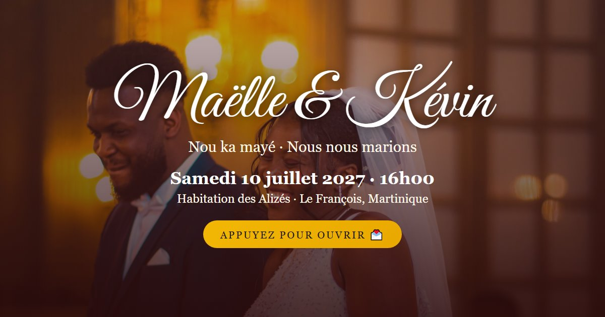
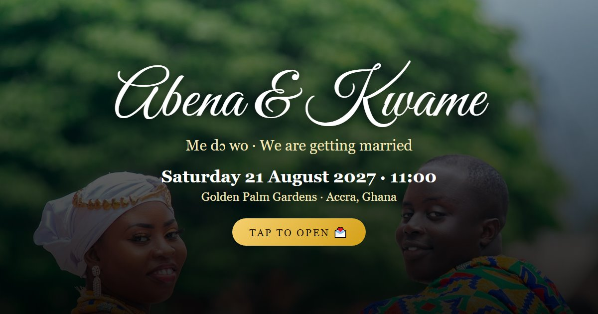
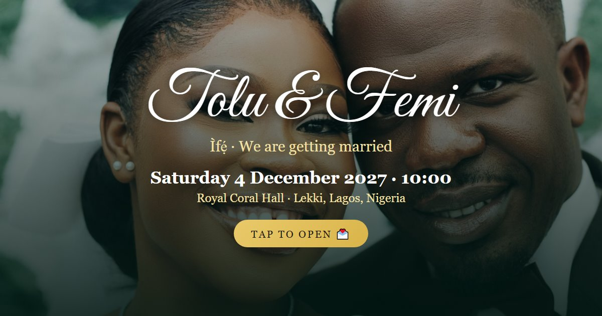
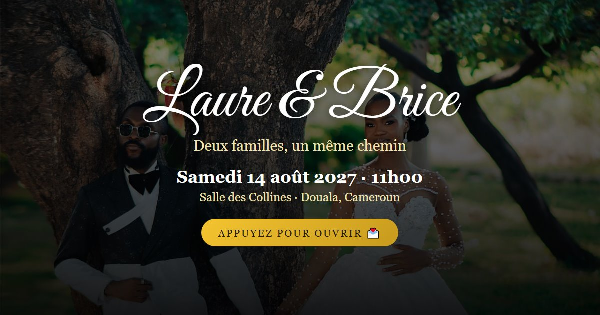
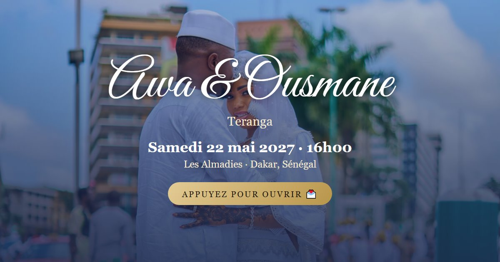
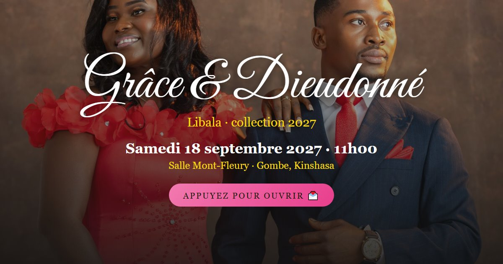
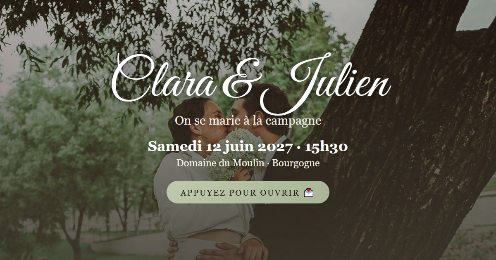
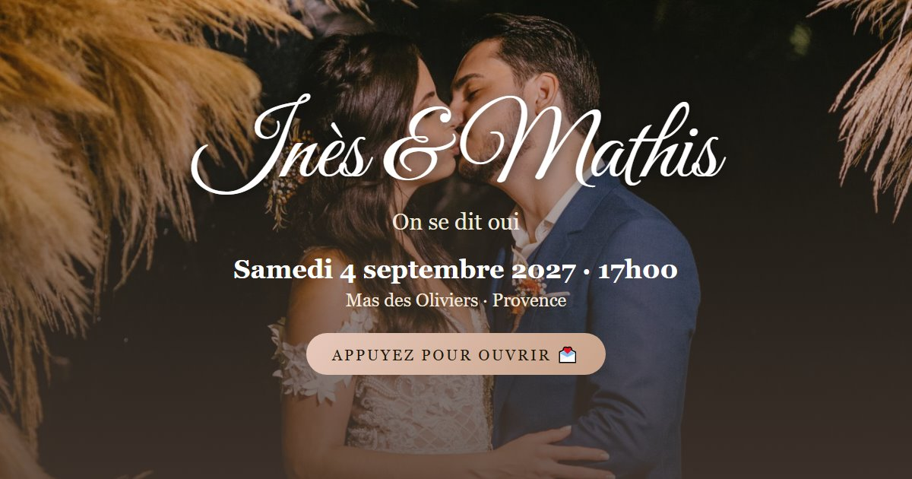
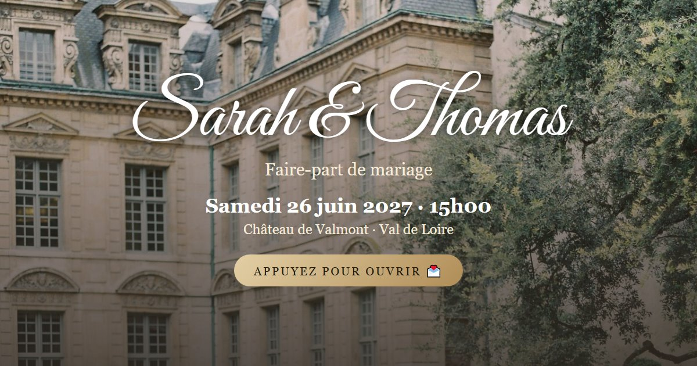

Lakay
Haïti
Français · créole haïtien
Portes de maison gingerbread qui s'ouvrent, lettrage peint des tap-taps
Voir la démonstration →
Madras
Martinique · Guadeloupe
Français · créole antillais
Coiffe tèt maré qui se dénoue, photo dans une fenêtre de case créole
Voir la démonstration →
Kente
Ghana
English · twi
Bandes tissées qui s'ouvrent comme un métier, noir et or, symbole adinkra
Voir la démonstration →
Owambe
Nigeria (yoruba)
English · yoruba
Éventail doré qui s'ouvre, couverture de magazine de mode
Voir la démonstration →
Toghu
Cameroun
Français
Pans de toghu brodé qui glissent, médaillon royal, nuit et étoiles
Voir la démonstration →
Teranga
Sénégal
Français · wolof
Voile de bazin blanc qui se lève, arabesques et filets dorés
Voir la démonstration →
Sape
Congo (RDC, Brazzaville)
Français · lingala
Étiquette de couture qui se retourne, catalogue de mode aux couleurs franches
Voir la démonstration →
Champêtre
Classique · campagne
Français
Serviette de lin nouée d'un brin de lavande, polaroïd et fleurs des champs
Voir la démonstration →
Bohème chic
Classique · bohème
Français
Herbes de la pampa qui s'écartent, arches terre cuite, lumière de fin d'été
Voir la démonstration →
Classique
Classique · intemporel
Français
Enveloppe ivoire au sceau de cire, monogramme et double filet doré
Voir la démonstration →